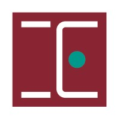

João Pedro Costa
Radiation Therapy BSc & Biomedical Engineering MSc
I am a young graduate in radiation therapy and biomedical engineering, equipped with both clinical and business experience. I am an adventurous individual who thrives on utilizing technology to solve problems. Combining my technical skills with a genuine passion for in teracting with people, I find fulfillment in roles that allow me to apply my expertise to help others.
Beyond my work, I am an avid enthusiast of fitness and maintaining a healthy lifestyle. Reading books enables me to explore fresh ideas and gain new perspectives and traveling is one of my greatest passions, as both provide the opportunity to embrace diverse cultures and broaden my horizons.
Lately, I have developed a curiosity for stock markets and web development, and I am casually studying these subjects to expand my knowledge and unearth potential opportunities.
Academic Education
/Curriculum/Logotipos/catolica-logo.jpeg) January 2021 - December 2021
January 2021 - December 2021
- Research project with the title "Nutritional management and counseling in radiotherapy: the role of the radiation therapist" presented at the National Congress of the Portuguese Association of Radiation Therapists in October 2021.
- Research project with the title "Adequate Nutrition for all the patients: urgency and priority of the high risk patient" presented at the Annual Congress of the Portuguese Association of Enteral and Parenteral Nutrition in May 2021.
/Curriculum/Logotipos/isel-logo.jpeg) September 2017 - June 2020
September 2017 - June 2020
Thesis to obtain the Master of Science (MSc) degree in Biomedical Engineering with the title "Development of a decision support system in oncology for prostate adenocarcinoma", presented at the National Forum of the Portuguese Association of Radiation Therapists in November 2020.

September 2013 - July 2017
Clinical internships in External Beam Radiotherapy, Planning CT and Dosimetry:
- Clínica de Santo António, Lisbon (4 months);
- Cliniques Universitaries Saint-Luc, Brussels (3 months);
- Centro Oncológico Dra. Natália Chaves, Lisbon (4 months).
Research Project with the title "Evaluation of the deviations on the set-up position of patients with head and neck tumors treated with VMAT" conducted in Hospital Meixoeiro in Vigo, Spain, and presented at the Nacional Congress of the Portuguese Association of Radiation Therapists in November 2017.
/Curriculum/Logotipos/chamapalimaud-logo.jpeg)
/Curriculum/Imagens Apresentacoes/cnart2021-apresentacao.jpg)
/Curriculum/Imagens Apresentacoes/apnep2021-apresentacao.jpg)
/Curriculum/Imagens Apresentacoes/forumart2020-apresentacao.jpg)
/Curriculum/Imagens Apresentacoes/cnart2017-apresentacao.jpg)